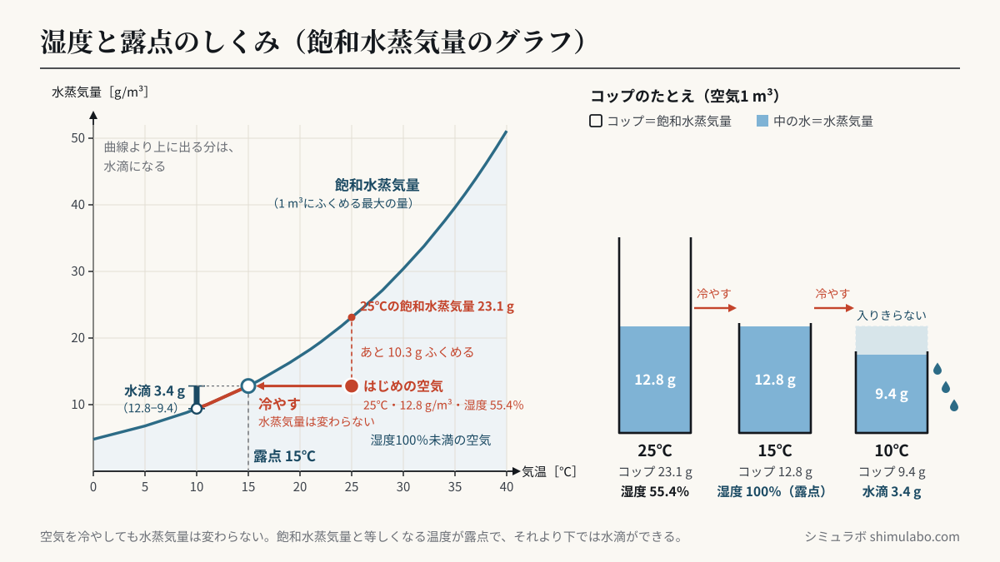
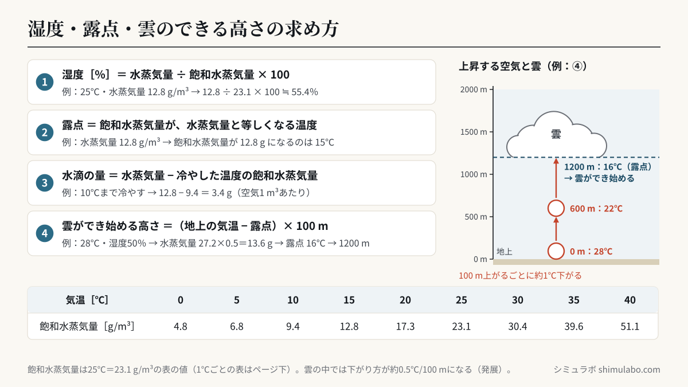

このシミュレーションでわかること
空気を冷やしていくと、空気1m³にふくまれる水蒸気量がその気温の飽和水蒸気量と等しくなる温度（露点）で水滴ができ始め、さらに冷やすと、飽和水蒸気量をこえた分が水滴になります。湿度は「水蒸気量÷飽和水蒸気量×100」で求められます。空気が上昇すると100mにつき約1℃気温が下がるので、（地上の気温−露点）×100mの高さで雲ができ始めます。
対応する単元は、中学校学習指導要領 理科 第2分野（4）「気象とその変化」の「気象観測」と「天気の変化（霧や雲の発生）」で、主に中学2年で学習します。
授業での使い方
- 導入：冷たい飲み物を入れたコップの表面や、冬の窓ガラスに水滴がつく様子を見せて、「この水はどこから来たのか」を問います。シミュレーターで「冷やす」を押し、点が曲線にぶつかったところで水滴ができ始めることを確かめます。
- 展開：金属製のコップに氷水を少しずつ加え、表面がくもり始めた水温（露点）を測る実験のあとに、測った気温と露点をシミュレーターに入れて湿度を求めます。雲をつくる実験（簡易真空容器などで袋の中の空気を膨張させる実験）のあとは「上昇させる」モードに切りかえ、上空で雲ができるしくみにつなげます。
- まとめ：下の例題を解いてから、統計欄の値で答え合わせをします。右側の「コップのたとえ」で、飽和水蒸気量（コップの大きさ）と水蒸気量（中の水）の関係を確認します。
生徒への問いの例：
- 気温を変えずに水蒸気量だけを増やすと、湿度と露点はそれぞれどう変わるでしょうか。
- 同じ空気でも、朝と昼で湿度がちがうのはなぜでしょうか（水蒸気量は変わらないとして考えましょう）。
- 湿度が高い日と低い日では、雲ができ始める高さはどちらが低くなるでしょうか。
しくみ・解説






図はタップすると大きく表示されます。授業のプリント・スライド・板書計画に自由に使えます（出典「シミュラボ」とページのURLを添えてください）。
飽和水蒸気量と湿度
空気1m³がふくむことのできる水蒸気の最大の質量を飽和水蒸気量［g/m³］といい、気温が高いほど大きくなります。グラフの青い曲線がこれにあたります。空気のしめりぐあいを表す湿度は、次の式で求めます。
露点
空気を冷やしても、ふくまれている水蒸気量は変わりません。一方で飽和水蒸気量は小さくなるので、湿度は上がっていきます。水蒸気量と飽和水蒸気量が等しくなった温度が露点で、このとき湿度は100％です。露点より下げると、飽和水蒸気量をこえた分の水蒸気が水滴になります（凝結）。地表付近でできたものが露や霧、上空でできたものが雲です。
計算問題の解き方（例題）
飽和水蒸気量は、このページの下の早見表の値を使います。
例題1 気温25℃の空気1m³に、12.8gの水蒸気がふくまれています。湿度は何％ですか。
→ 25℃の飽和水蒸気量は23.1g/m³なので、12.8÷23.1×100＝55.41… 答え 約55％（小数第1位を四捨五入）
例題2 例題1の空気の露点は何℃ですか。
→ 飽和水蒸気量が12.8g/m³になる気温を表でさがすと15℃です。 答え 15℃
例題3 例題1の空気を10℃まで冷やすと、空気1m³あたり何gの水滴ができますか。また、容積200m³の理科室全体では何gですか。
→ 10℃の飽和水蒸気量は9.4g/m³なので、12.8−9.4＝3.4g。理科室全体では3.4×200＝680g。 答え 3.4g、680g
例題4 気温28℃、湿度50％の空気の露点は何℃ですか。
→ 水蒸気量＝28℃の飽和水蒸気量×湿度÷100＝27.2×50÷100＝13.6g/m³。飽和水蒸気量が13.6g/m³になるのは16℃です。 答え 16℃
例題5 例題4の空気が上昇すると、地上から何mの高さで雲ができ始めますか。空気は100m上昇するごとに1℃下がるものとします。
→ 28℃から露点の16℃まで12℃下がる必要があるので、12×100＝1200m。 答え 1200m
雲のでき方
空気のかたまりが上昇すると、上空ほど気圧が低いために膨張し、温度が下がります。中学校では「100m上昇するごとに約1℃下がる」として考えます。温度が露点まで下がると、水蒸気が小さな水滴（0℃より低いところでは氷の粒）になり、雲ができます。雲ができ始めてからは、水蒸気が水滴になるときに熱を出すため、温度の下がり方は100mにつき約0.5℃とゆるやかになります（発展。高校入試のフェーン現象の問題でよく使われる値です）。シミュレーターの「上昇させる」モードもこの値で計算しています。
飽和水蒸気量の早見表（0〜40℃、1℃ごと）
| 気温 | 飽和水蒸気量［g/m³］ | 気温 | 飽和水蒸気量［g/m³］ | 気温 | 飽和水蒸気量［g/m³］ |
|---|---|---|---|---|---|
| 0℃ | 4.8 | 14℃ | 12.1 | 28℃ | 27.2 |
| 1℃ | 5.2 | 15℃ | 12.8 | 29℃ | 28.8 |
| 2℃ | 5.6 | 16℃ | 13.6 | 30℃ | 30.4 |
| 3℃ | 6.0 | 17℃ | 14.5 | 31℃ | 32.1 |
| 4℃ | 6.4 | 18℃ | 15.4 | 32℃ | 33.8 |
| 5℃ | 6.8 | 19℃ | 16.3 | 33℃ | 35.7 |
| 6℃ | 7.3 | 20℃ | 17.3 | 34℃ | 37.6 |
| 7℃ | 7.8 | 21℃ | 18.3 | 35℃ | 39.6 |
| 8℃ | 8.3 | 22℃ | 19.4 | 36℃ | 41.7 |
| 9℃ | 8.8 | 23℃ | 20.6 | 37℃ | 43.9 |
| 10℃ | 9.4 | 24℃ | 21.8 | 38℃ | 46.2 |
| 11℃ | 10.0 | 25℃ | 23.1 | 39℃ | 48.6 |
| 12℃ | 10.7 | 26℃ | 24.4 | 40℃ | 51.1 |
| 13℃ | 11.4 | 27℃ | 25.8 |
・飽和水蒸気量は、中学校の教科書や問題集でよく使われる値（25℃＝23.1g/m³の表）です。教科書によっては小数第1位が0.1ほどちがうことがあるので、授業では使っている教科書の表に合わせてください。表と表の間の温度は、となりの2つの値を直線で結んで計算しています（露点が小数になるのはこのためです）。
・教科書と同じく、冷やしても上昇しても、空気1m³中の水蒸気量は変わらないものとして計算しています。実際には上昇した空気は膨張するので露点も少し下がり（100mにつき約0.2℃）、雲ができ始める高さは（気温−露点）×約125mになります。また、気象庁などが水蒸気圧から求める露点は、この方法で求めた値より0.5℃ほど高くなります。
・0℃より低い温度は扱っていません（水蒸気量は露点が0℃以上になる範囲で動きます）。
参考
- 文部科学省「中学校学習指導要領（平成29年告示）解説 理科編」（中学校学習指導要領解説）
- 中学校理科の教科書（東京書籍「新しい科学」、啓林館「未来へひろがるサイエンス」、大日本図書「理科の世界」、学校図書「中学校科学」、教育出版「自然の探究 中学理科」）の第2学年「気象とその変化」の単元
- 気象庁「気象観測の手引き」（湿度・露点温度の観測）
- 国立天文台 編『理科年表』（丸善出版）
引用・転載について
本ページのシミュレーション結果・数値は、出典を明記いただければブログ・ニュース記事・SNS・授業や社内資料への引用を歓迎します。事前連絡は不要です。
出典：シミュラボ「湿度と雲のでき方シミュレーター（飽和水蒸気量・露点）」 https://shimulabo.com/sims/shitsudo-roten/よくある質問
- 露点とは何ですか？
- 空気を冷やしていったとき、ふくまれている水蒸気が水滴に変わり始める温度です。空気1m³中の水蒸気量が、その温度の飽和水蒸気量と等しくなる温度なので、露点では湿度が100％になります。たとえば水蒸気量12.8g/m³の空気の露点は、飽和水蒸気量が12.8g/m³になる15℃です。
- 湿度はどうやって計算しますか？
- 湿度［％］＝空気1m³にふくまれる水蒸気量［g/m³］÷その気温での飽和水蒸気量［g/m³］×100 で求めます。気温25℃（飽和水蒸気量23.1g/m³）で水蒸気量が12.8g/m³なら、12.8÷23.1×100＝約55％です。
- 空気を冷やすと湿度が上がるのはなぜですか？
- 冷やしても空気中の水蒸気量は変わりませんが、飽和水蒸気量（式の分母）が小さくなるからです。露点で湿度は100％になり、それより冷やしても湿度は100％のまま、入りきらなくなった水蒸気が水滴になります。
- 雲ができ始める高さはどう求めますか？
- 空気が100m上昇するごとに約1℃下がるとすると、（地上の気温−露点）×100［m］で求められます。気温25℃・露点15℃なら、10℃下がる必要があるので1000mです。
- 教科書の飽和水蒸気量の表と値が少しちがいます。
- 飽和水蒸気量の表は、教科書や問題集によって小数第1位が0.1ほどちがうことがあります。このシミュレーターは25℃を23.1g/m³とする表を使っています。授業やテストでは、使っている教科書や問題に書かれた表の値で計算してください。
- 霧と雲はどうちがいますか？
- どちらも、空気中の水蒸気が冷やされてできた小さな水滴（や氷の粒）が浮かんでいるものです。地表付近にできたものを霧、上空にできたものを雲とよびます。